Mans stāsts par pārvēršanos no tievas brunetes resnā un atpakaļ
date
Ja Tev tāpat kā man ir problēmas ar lieko svaru, tad Tu esi īstajā vietā. Es ar šo problēmu cīnījos ļoti ilgi, bet nespēju sasniegt nekādus rezultātus. Vēlos Tev atklāt patieso stāstu par savu dzīvi, kā internetā atrasts tests izmainīja manu dzīvi uz visiem laikiem! Šie emuāri tapa tādēļ, ka ikvienai meitenei ir sava sapņu figūra. Jo ikviena no mums ir pelnījusi būt slaida, skaista un mīlēta.
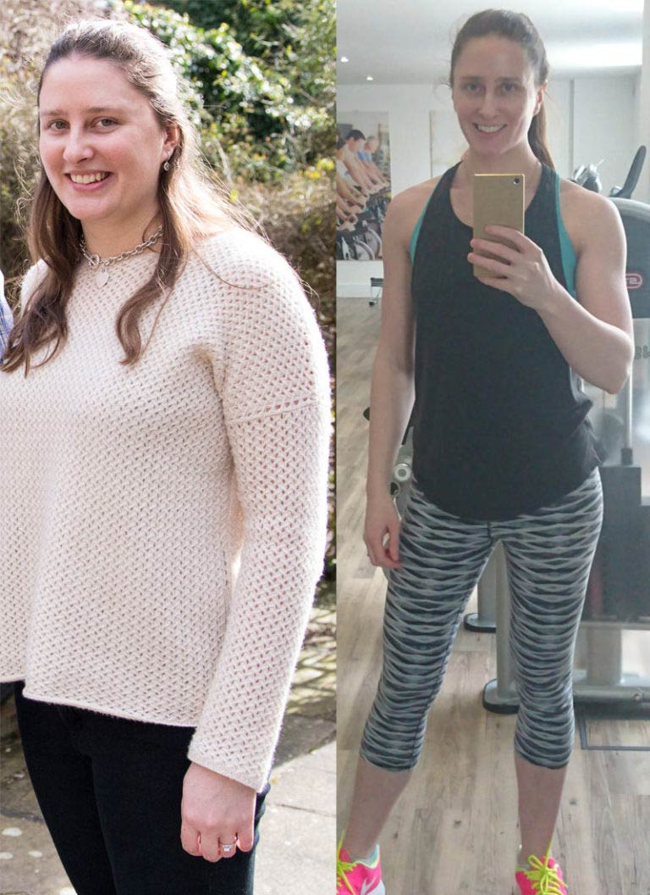 Ir grūti noticēt, ka es biju tik resna kā redzams kreisajā pusē...Vēsture
Vai varat uzminēt, ar ko tas viss sākās? Protams, ar kāzām un grūtniecību.
Jaunībā biju diezgan skaista meitene. Slaida, ar brūnām acīm un melniem matiem, 173 cm gara, glītu seju un tievu vidukli, un, ticiet man, es nekad neuztraucos par savu izskatu, lai gan man nebija presītes, un kājas nebija tik tievas kā es vēlētos. Tomēr neviens tam nepievērsa uzmanību, pat ne es. Tas viss sākās pēc manām kāzām un grūtniecības.
Kad vēl nebiju precējusies, es dzīvoju pastāvīgā steigā, man vienmēr trūka laika, un tas atspoguļojās manos ēšanas paradumos. Pēcpusdienas tēja ar cepumiem vai sviestmaizi, pēc tam desmitos vakarā frī kartupeļi ar kečupu, maize un kefīrs. Kad paliku stāvoklī, mani paradumi nemainījās. Es ēdu vēl vairāk saldumus, kā rezultātā dzemdību brīdī es svēru 107 kilogramus.
Lai pārceltu mani no ratiņkrēsla uz gultu, slimnīcā bija vajadzīgi četri cilvēki!Sešus mēnešus pēc dzemdībām.
Ņemot vērā manu svaru un bērna nepareizo guļu, man tika veikts ķeizargrieziens. Vīrs teica, ka uz gultu mani pārcēla četri cilvēki: mans vīrs, ķirurgs un divas medmāsas, un palags esot gandrīz saplīsis zem mana svara. Izrakstoties no dzemdību nama, es svēru 97 kilogramus. Tā vietā, lai sāktu par to uztraukties, es tikai atradu iemeslus, kādēļ ēst vēl vairāk. Es sev iestāstīju, ka manam mazulītim ir nepieciešams pietiekami taukains piens, un ka es nometīšu lieko svaru, tiklīdz būšu beigusi barot ar krūti. Galu galā taukaina kļuvu es pati, ne piens!
Pēc dzemdībām
Sāc tievēt vai beidz žēloties, turpini ēst un kļūti resna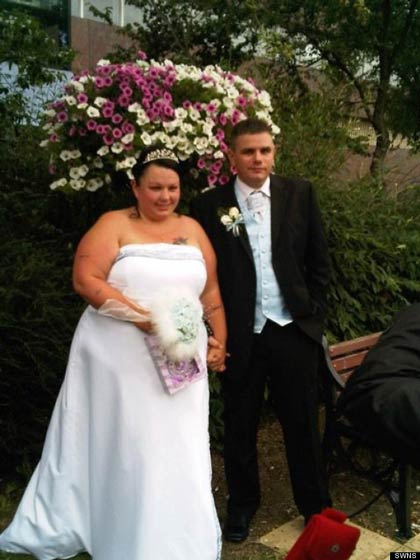 Es ar savu mīļoto vīru
Pēc 11 mēnešiem mans svars bija 101 kg, un es nezinu, ar ko tas viss būtu beidzies, ja nebūtu mana vīra. Mēs bijām mājās, es ēdu cepumus un žēlojos, ka jūtos resna. Galu galā mans vīrs zaudēja pacietību un izteica ultimātu – sāc tievēt vai arī beidz žēloties, turpini ēst un kļūsti resna. Tad meitenes es jutos šokēta – sēdēju un raudāju par savu izplūdušo vidukli, mierināju sevi ar saldumiem, bet vienīgais, ko man vajadzēja darīt, bija vingrot, vingrot un vingrot.
Nākamajā rītā es pamodos, nocēlu svarus no skapja augšas un nosvēros – tie rādīja 103 kg!
Sāku sekot līdzi tam, cik daudz un cik bieži es ēdu, bet, ņemot vērā grūto mājas soli un rūpes par mūsu dēliņu, man negāja diez ko labi. Būdama stāvoklī, es ēdu, kad un ko gribēju, vienalga, vai vēlu vakarā vai pat naktī. Tas bija ieradums, no kura bija grūti atradināties.
Visgrūtākais ir piespiest sevi kaut ko darīt. Diētas sākums vienmēr tiek atlikts uz \“rītdienu\”.
Turklāt man bija problēma ar regulārajiem ciemiņiem, ciemos nāca gan man vīramāte, gan mana mamma, un viņas gatavoja kalorijām pārbagātu ēdienu, nemaz neklausoties manos iebildumos.
Tieši pirms sāku zaudēt svaruGrūtākais ir saņemt sevi rokās. Diētas sākums tiek vienmēr atlikts uz \“rītdienu\”. Pāris reizes es mēģināju badoties nedēļu vai divas vai vienkārši ēst tikai ābolus, bet es vienmēr padevos.
Pirmkārt, sagruva mans gribasspēks, otrkārt, man zuda spēja koncentrēties, treškārt, man visu laiku gribējās ēst... Es nevarēju atļauties sliktu garastāvokli. Mazam bērnam ir nepieciešama laba un laimīga mamma, nevis tāda, kura vienmēr ir aizkaitināta. Es izmēģināju visu – ksenikālo un Atkinsa diētu, un vēl veselu lērumu lietu. Rezultāts vienmēr bija viens un tas pats – iesākumā es zaudēju piecus kilogramus, bet pēc tam pieņēmos atpakaļ svarā par septiņiem.
Mana mamma man ieteica atmest tam visam ar roku. Ņemot vērā, ka visas manas radinieces bija slaidas, bija bezjēdzīgi vainot gēnus, tādēļ vienīgais, kas atlika, bija smags darbs ar sevi.
Kā man brīnumainā kārtā izdevās nomainīt savu 52. izmēra apģērbu pret 44. dažu mēnešu laikā
Es sāku apmeklēt trenažieru zāli, kur es nekavējoties ieguvu ceļa traumu, kuras dēļ es veselu mēnesi nogulēju dīvānā, ēdot cepumus. Beigu beigās pēc visiem maniem pūliņiem trenažieru zālē es biju vēl smagāka nekā agrāk.
Pēc pastāvīgās izgāšanās man sākās smaga depresija, kuras dēļ es, protams, apēdu vēl vairāk šokolādes un cepumu.
Tikšanās, kas izmainīja manu dzīvi.
Kad biju jau nolēmusi padoties, es satiku savu bērnības dienu draudzeni, kuru nebiju redzējusi kopš vidusskolas laikiem, kad viņa pārvācās. Viņa, cik atceros, vienmēr bija mazliet tukla, bet, kad tikāmies, es nespēju noticēt savām acīm – viņa bija tieva kā modele! Draudzene man pastāstīja, kā viņai brīnumainā kārtā izdevās nomainīt savu 52. izmēra apģērbu pret 44. izmēru dažu mēnešu laikā. Aptuveni pirms pusgada viņa veica svara nomešanas testu tiešsaistē, ko izstrādājis profesionāls uztura speciālists, lai risinātu liekā svara problēmas visā valstī. Katrai personai tiek izstrādāts individuāls svara zaudēšanas plāns, kas ļauj zaudēt līdz pat 15 kg mēnesī, nekaitējot veselībai. Ņemot vērā atbildes uz testa jautājumiem, viņi izvēlējās tieši manu draudzeni dalībai šai programmā.
Pēc visiem pārbaudījumiem viņi man ieteica lietot , un tas palīdzēja.
Palūdzu, lai viņa man atsūta linku uz šo testu. Pēc testa arī man tika ieteikts lietot . Pastāstīšu mazliet vairāk par šo testu. Tas ir šķidrumā šķīstošs pulveris, kas sastāv no 8 dabīgiem komponentiem. Man vienmēr ir bijušas pretenzijas pret ķīmiskām vielām, bet šis produkts ir 100% dabīgs, turklāt tam ir veiktas visas nepieciešamās kvalitātes pārbaudes. Cik saprotu, samazina svaru, paātrinot vielmaiņu, nomācot izsalkuma sajūtu un noārdot tauku nogulsnes. Bioloģija un ķīmija nav mana stiprā puse, bet tas ir rakstīts viņu mājaslapā. Sīkāku informāciju var apskatīt viņu mājaslapā, es pievienoju saiti uz to šī raksta beigās. Pasūtīju , pēc dažām dienām es saņēmu savu pasūtījumu un sāku lietot šo produktu.
pēc 2 nedēļām svari rādīja par 7 kilogramiem mazāk – parādījās stimuls turpināt. Pēc vēl divām nedēļām – vēl 8 zaudēti kilogrami. Ikviens mani atbalstīja, es neapstājos un turpināju lietot .
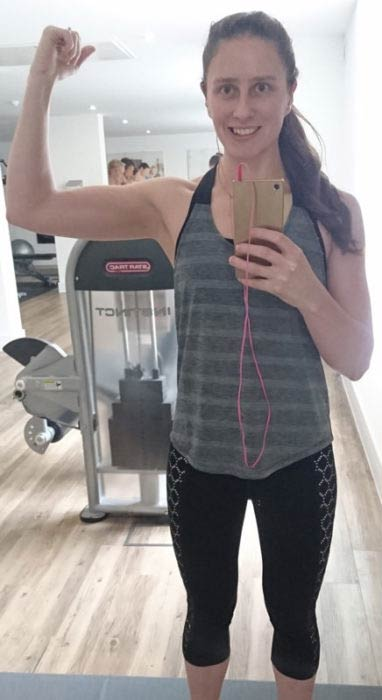 Mana ģimene bija šokā par to, cik daudz svara es zaudējuNākamā mēneša laikā es zaudēju vēl 16 kg. Trešā mēneša laikā es ar prieku secināju, ka sveru 56 kilogramus. 13 nedēļu laikā biju zaudējusi 47 kilogramus! Tas bija brīnums, kuram es pati vēl ilgi nespēju noticēt! Tomēr fakti liecināja, ka tas ir noticis! Tobrīd es apjautu, ka esmu pilnībā izmainījusies – mana gaita, ģērbšanās stils, kustības, domāšana un pašapziņa.
Daudzi man jautā, ko es ēdu, kamēr lietoju . Ziniet, es nekādā veidā sevi neierobežoju – ēdu visu, ko parasti. Interesanti ir tas, ka, pateicoties man uzlabojās garšas sajūtas. Sev neraksturīgi, bet es sāku ēst vairāk dārzeņus un augļus, un mazāk ceptus ēdienus un saldumus, kurus tik ļoti mīlēju. izmainīja manu garšas sajūtu dabīgā veidā, un es sevi neierobežoju nekādā veidā – es vienkārši pārtraucu ēst tās lietas, jo man vairs tās negribējās. Jā, es dažreiz ēdu āri saldumus un taukainus ēdienus, bet pat pēc pusotra mēneša, kopš biju pārtraukusi lietot , es tos ēdu ļoti reti, un es nepārēdos, kā tas bija agrāk.
Mans vīrs ir vienkārši sajūsmā par manām pārvērtībām.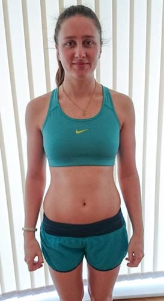 Rezultāts ir vienkārši neticams!
Pēc pusotra mēneša es biju ne tikai atguvusi savu agrāko svaru, bet arī zaudējusi liekos 5 kilogramus, kurus šķita ir neiespējami zaudēt. Sakot, ka jūtos ļoti apmierināta, ir pateikt neko. Tā ir fantastika! Arī mans vīrs nespēj vien beigt priecāties un ir sācis pievērst man vairāk uzmanības. Tagad es šad un tad pat pajokoju, ka arī viņam nekaitētu zaudēt pāris kilogramus, tomēr viņš to nevēlas, apgalvojot, ka vīrietim ir jābūt lielam. Es viņu mīlu tādu, kāds viņš ir, un tāpēc neuzstāju.
Biju noraizējusies, ka pēc tam, kad beigšu lietot šo produktu, mans liekais svars ātri vien atgriezīsies. Nu jau ir pagājis vairāk nekā pusotrs mēnesis, kopš pārstāju lietot , un mans svars ir palicis nemainīgs,tas nav pieaudzis. Tas ir satriecoši.
Aizmirsu pastāstīt par izstaipīto ādu, no kuras baidās ikviens, kurš nolēmis nomest lieko svaru. Pārsteidzoši, bet mana āda nenokarājās, gluži otrādi, tā kļuva vēl elastīgāka. Vēlāk es uzzināju no draudzenes, ka tas ir, pateicoties kolagēnam un polinepiesātinātajām taukskābēm, kas ir sastāvā. Uzņēmu īpašu foto, lai parādītu, kā mana āda izskatās tagad.
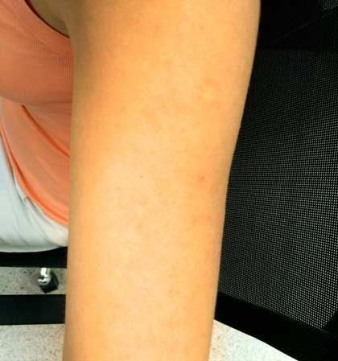 Manas bailes par strijām pēc svara zaudēšanas nekļuva par realitātiEs nekad neesmu ticējusi brīnumlīdzekļiem, kas tiek reklamēti TV un kas ir nopērkami aptiekās. Tomēr, kad es veicu testu un pasūtīju , es par to nešaubījos, jo man bija dzīvs pierādījums tā iedarbībai. Esmu patiešām priecīga, ka varēju pastāstīt savu stāstu, un es ceru, ka mana pieredze ļaus citiem iegūt savu sapņu figūru!
Tagad man vairs nav kauns doties uz pludmali :) Patiesībā, mans vīrs ir greizsirdīgs uz citiem vīriešiem, kas uz mani skatāsTagad es varu būt piemērs citām meitenēm.
Mana draudzene zaudēja 9 kilogramus 3 nedēļu laikā, un viņa nedomā padoties!
Tagad es ikvienam iesaku , un es jau redzu rezultātus un jūtu sirsnīgu pateicību. Man tuva draudzene bija sajūsmā par to, kā es zaudēju lieko svaru, un arī viņa pasūtīja . Uz šo brīdi viņa ir zaudējusi 9 kilogramus 3 nedēļu laikā, un viņa pat nedomā padoties!
Esmu gatava saderēt uz visu lieko svaru, ko esmu zaudējusi, ka Tu zaudēsi svaru, lietojot . Ja 2 mēnešu laikā, lietojot šo metodi, nezaudēsi vismaz 20 kilogramus, es pieņemšos atpakaļ svarā par 50 kilogramiem, ko zaudēju. Tik ļoti pārliecināta es esmu par efektivitāti. Patiesībā es iesaku ikvienam veikt zemāk redzamo testu, lai pārliecinātos, vai produkts ir piemērots lietošanai:
Pēc visa tā, ko biju piedzīvojusi, es vienkārši nespēju nepastāstīt to citiem. Es patiešām vēlos, lai pēc iespējas vairāk meiteņu atbrīvotos no liekā svara un kļūtu pašpārliecinātas un laimīgas! Neatliec uz vēlāku laiku! Ja Tu patiešām vēlies zaudēt lieko svaru, tad negaidi, kamēr notiks brīnums, un rīkojies! Kā īpašu dāvanu manu emuāru lasītājiem es ievietoju saiti uz mājaslapu, kur es un mana draudzene pasūtījām . Tā ir viņu oficiālā tīmekļa vietne. Tur ir iespējams izlasīt sīkāku informāciju par un to pasūtīt.
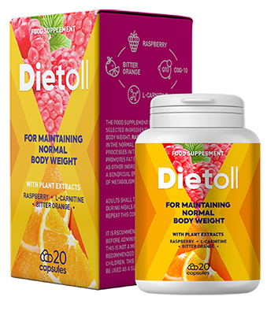Esmu priecīga, ka varēju padalīties ar savu stāstu. Es ceru, ka palīdzēju Tev iegūt Tavu sapņu figūru. Meitenes, kuras jau ir pamēģinājušas , ierakstiet komentāros savus rezultātus! Ikviens gribēs izlasīt arī jūsu stāstus! Ja rodas jautājumi, droši rakstiet komentāros, mēģināšu uz tiem atbildēt.
(Nobalsojušas: 2051 personas)

37 komentāri
Ināra Meija
dateEs nespēju noticēt, ka tā ir viena un tā pati sieviete. Viņa ir kļuvusi par īstu skaistuli!!!!!!!!!! Pārskatīju vairākas reizes – ak, Dievs, cik ļoti liekais svars izmaina cilvēku! Vēlos, lai ikviens paskatītos uz sevi no malas!!!! Mums visiem ir kaut kas jāvēlas – jo dzīve paiet garām un neviens to neredz, cik skaisti mēs patiesībā esam!!!!!!! Tu sniedzi man motivāciju, un es pasūtīju . Ceru, ka palīdzēs!!!!
Anda Ziediņa
2020Esmu pārliecināta, ka Tev izdosies! Lūdzu, pastāsti pēc tam par saviem rezultātiem, tas būs interesanti gan man pašai, gan maniem lasītājiem.
Renāte Gražule
dateSUPER!!! ROKĀ IR!!!!! Arī es ciešu no liekā svara un ceru, ka Purple MANGOSTEEN patiešām palīdzēs! Paldies par iedvesmojošo rakstu!!!
Ināra Meija
dateSveika Anda! Lūdzu palīdzi! Es dzīvoju Eiropā. Vai produktu ir iespējams pasūtīt uz citu Eiropas valsti?
Anda Ziediņa
2020Sveika! Jā! Šī produkta oficiālais izplatītājs piegādā produktu uz jebkuru Eiropas valsti. Mana draudzene, kas pasūtīja produktu uz Itāliju, saņēma to diezgan ātri. Vēlu veiksmi svara zaudēšanā :)
Una Veldre
dateNETICAMI!!!! Tev piestāv būt slaidai! Bravo!!!! Par Purple MANGOSTEEN es dzirdēju pirms 3 mēnešiem, bet es pabaidījos to nopirkt. Tu izkliedēji manas šaubas, liels paldies! Pasūtīju gan sev, gan mammai – metīsim svaru kopā!
Anda Ziediņa
dateDārgā Una, manuprāt, ikviena no Jums ir pelnījusi būt tieva. Pasveicini savu mammu!
Lauma Daudzuma
dateJutos iepriecināta, lasot Tavu rakstu, un varu apliecināt, ka Purple MANGOSTEEN strādā.
Arī es pirms dažām nedēļām kopā ar draudzeni veicu šo testu. Purple MANGOSTEEN man derēja, manai draudzenei piedāvāja citu notievēšanas metodi. Lūk, rezultāts pēc diviem mēnešiem, arī manas draudzenes rezultāti ir iespaidīgi, bet es nepublicēšu viņas bildi.
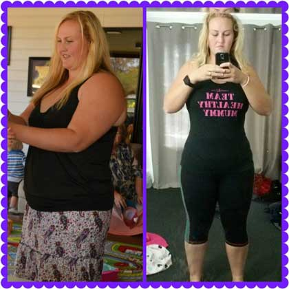Sindija K.
2020Es izmēģināju un ar pārliecību varu teikt – tas izglāba manu laulību. Mans vīrs atkal skatās uz mani ar interesi, un es esmu atguvusi savu pašapziņu.
Baiba Jaškova
2020Meitenes pierakstiet arī mani savā tievētāju pulciņā!!!! Tikko saņēmu Purple MANGOSTEEN! Paldies par šo ieteikumu, tas palīdzēja man saņemties tievēt. Apsolos ziņot par rezultātiem!
Anda Ziediņa
dateSveika Baiba. Priecājos par Tevi un man prieks, ka man izdevās Tevi atbalstīt, jo vissvarīgākais ir dzīvot harmonijā ar sevi un to var iegūt tikai tad, ja esi apmierināts ar savu izskatu. Raksti par rezultātiem! Lai veicas!
Ginta Treikale
2020Sveika, Anda! Es laimīga, ka uzgāju Tavus emuārus, cerams Tu varēsi man palīdzēt. Esmu izmēģinājusi gandrīz visu, bet mani rezultāti ne tuvu nav tādi, kā cerēts. Esmu 162 cm gara, bet mans svars ir (pat kauns teikt) – 105 kg. Ceru, ka Purple MANGOSTEEN palīdzēs.
Anda Ziediņa
2020Čav Ginta! Es neesmu vienīgā, kura ir zaudējusi svaru ar . Arī dažām manām draudzenēm tas ir palīdzējis. Vēlāk, ja draudzenes atļaus, ielikšu viņu foto. Es ļoti ceru, ka Tev arī izdosies. Meitenes, kuras ir zaudējušas svaru, lūdzu, rakstiet par saviem rezultātiem, ja svaru zaudējāt, lietojot . Citām taču būs interesanti palasīt.
Zaiga Lukjanova
2020Nespēju beigt apbrīnot! Nē, nopietni, es visu laiku skatos uz Tavu foto!!!! Pēc šī raksta man vairs nav izvēles, laiks mainīties!! Pasūtīju , tagad gaidu, kad piegādās, un jāsāk lietot
Olga Holodova
2020Apsveicu Anda, nespēju noticēt, ka Tu to sasniedzi tikai 13 nedēļu laikā. Es jau sāku lietot… šausmas pārņem, kad domāju par savu svaru…. br….
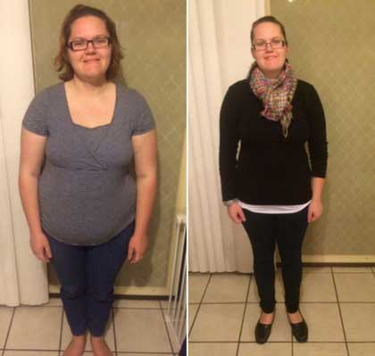Sigita Markova
2020Es lietoju un sešu nedēļu laikā zaudēju 21 kg!!! Nespēju noticēt, ka tas vispār ir iespējams, bet tas tiešām tā ir!!! Anda, liels paldies, bet Tu izmainīju visu manu dzīvi!
Aiga Upeniece
2020Es pasūtīju , pateicoties šim rakstam! Kā solīts, lūk, mani pirmie rezultāti! Lielisks produkts, pirmo divu nedēļu laikā esmu zaudējusi 7kg!! Tā ir mana personīgā uzvara!!!
Kristīne Aišpure
2020Neticami!!! Arī mana draudzene zaudēja svaru, lietojot MANGOOSTEEN, pirms dažiem mēnešiem. Viņa izmainījās tik ļoti, ka pat es nespēju pie viņas pierast. Viņa zaudēja 19 kg 5 nedēļās. Tomēr šis stāsts izklausās vēl neticamāks.
Evija Vanaga
2020Kā lūdzāt, rakstu savus rezultātus. Vairāk nekā 8 kg. pirmo divu nedēļu laikā man likās, ka es spēju lidot. ☺
Anda Ziediņa
2020Sveika Evij! Priecājos par Taviem rezultātiem, bet, cik atceros, Tu vēlējies zaudēt 18 kg. Tikai nepadodies! Lai veicas!
Ieva Caune
2020Labrīt, Anda! Izlasīju Tavu rakstu un nolēmu pasūtīt . Nesen es nosvinēju savu 20 gadu dzimšanas dienu, un man kauns atcerēties, kāda es biju. Es svēru 82 kg, bet esmu tikai 160 cm gara. Man bija 54. izmērs. Tagad man ir 60 kg un 48. izmērs. Pusotra mēneša laikā esmu atbrīvojusies no 22 kg. Nespēju aprakstīt, cik priecīga es esmu. Man likās, ka nekad nespēšu tikt vaļā no tiem briesmīgajiem kilogramiem. Liels paldies!
Egita Zālīte
2020Pārsteidzoša iedarbība!!! Gribēju noskaidrot, vai nav jāievēro diēta? Vai tā es varēšu zaudēt svaru, un vai zaudētais svars neatgriezīsies?
Anda Ziediņa
2020Labākais svara zaudēšanā ar ir tas, ka nav jāievēro diētas. tas nozīmē, ka Tev nebūs jādzīvo pastāvīgā badā, un svars neatgriezīsies. Lietojot šo metodi, Tu kļūsi slaida, zaudētie kilogrami neatgriezīsies! Neuztraucies, galvenais ir sākt!
Alise Siliņa
2020Sveika Anda! Šodien ir pagājis tieši viens mēnesis, kopš es saņēmu savu , esmu zaudējusi 19.7 kg. Kad sāku to lietot, man bija 79,9 kg, bet tagad man ir 60,2 kg. Esmu laimīga par savu veselību un izskatu. Tām, kurām nekādi neizdodas zaudēt svaru, iesaku izmēģināt šo te. ir īsts brīnums! Vēlreiz paldies!
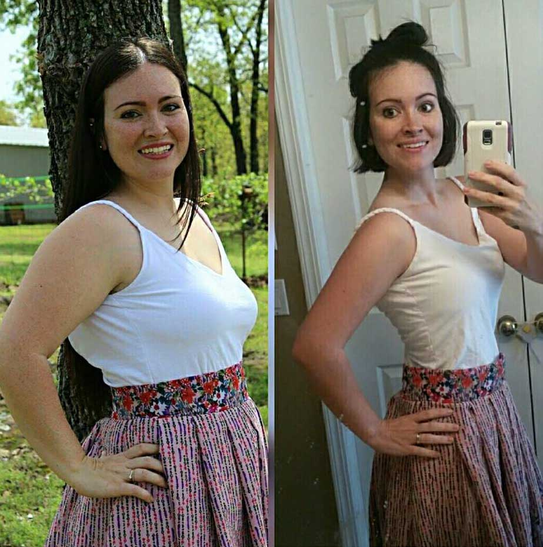Terēze Muceniece
2020Es ļoti vēlētos atbrīvoties no 14kg. Lasot komentārus, man sāk likties, ka tas ir iespējams. Gribu pamēģināt … Novēliet man veiksmi, man to ļoti vajadzēs.
Anda Ziediņa
2020Terēze, atmet šaubas, ja reiz esi nolēmusi nomest lieko svaru, dari to! ļaus Tev ātri un uz visiem laikiem sasniegt Tavu mērķi. Vēlēt Tev veiksmi nav vērts, jo tām, kurām ir mērķis, vienmēr to sasniedz. Novēlu Tev tādu izskatu, kādu Tu vēlies!
Agita Krūmiņa
dateEs zaudēju lieko svaru, pateicoties šim produktam. Māsa man tveda no Vācijas pirms trīs gadiem, tolaik to vēl nevarēja dabūt pie mums... Teikšu godīgi, es pat negaidīju tādus rezultātus. Man likās, ka tās ir muļķības, un ilgāku laiku es pat nesāku to lietot. Māsa tomēr mani pārliecināja, lai es to pamēģinu. Sāku to lietot maijā un jau jūnijā es devos uz veikalu pēc jaunām drēbēm. Man krita nost bikses! :) :) :) :) :) Nepilnos divos mēnešos biju zaudējusi 12kg (no 67 uz 55kg)!!!!!! Tagad mans svars stāv uz vietas, un divu gadu laikā tas nav mainījies!!! Lieki piebilst, cik priecīga esmu!! :))) Iesaku ikvienai pamēģināt ! Jau pēc divām nedēļām redzēsiet rezultātus!
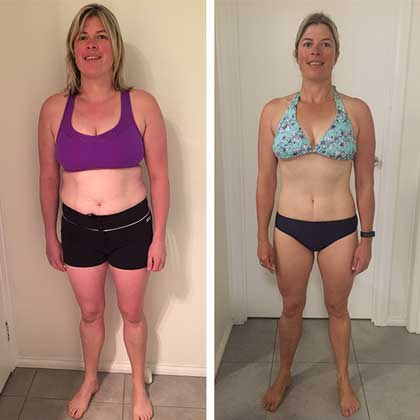Anda Ziediņa
2020Sveika, Agita! Rezultāti ir patiešām iespaidīgi! Starp citu, šis produkts divu gadu laikā arī ir mainījies. Ir veikti pētījumi un tagad tā efektivitāti ir 100%, tādēļ es to iesaku ikvienam. Meitenes, piedodiet, bet es fiziski nespēju atbildēt uz visiem jautājumiem, bet es patiešām izlasu ikvienu komentāru un jūtu jums līdzi.
Ināra Meija
datePaldies, Anda! Nezinu, kā Tev pateikties. Tu izmainīji manu dzīvi! Nevainojams līdzeklis. Pusotra mēneša laikā es zaudēju 27 kg. Bingo! Mana personīgā uzvara, ar kuru es ļoti lepojos!
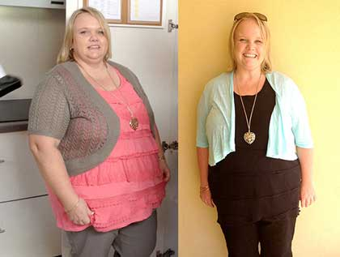Alīna Strautiņa
dateLabrīt, Anda! Vēlos Tev pateikt paldies, ka palīdzi meitenēm, kuras vēlas zaudēt liekos kilogramus. Man ir 33 gadi, un pēdējo gadu laikā esmu saskārusies ar vairākām liekā svara problēmām. Es knapi spēju pakustēties. Nepārtraukti apgrūtināta elpošana, locītavu sāpes, sāpēja gan kājas, gan mugura. Es ātri noguru un visu laiku jutos miegaina. Vienmēr zināju, ka to izraisa mans liekais svars! Pēc šī raksta izlasīšanas, bez vilcināšanās pasūtīju produktu un sāku to lietot. Rezultāti pārspēja manas cerības! Šobrīd es sveru 62 kg, bet pirms tam 93 kg. 3 mēnešos esmu zaudējusi 31 kg. Tagad man liekas, ka esmu viegla kā pūciņa! Elpošanas problēmas izgaisa, tāpat kāju un muguras sāpes. Es jūtos daudz labāk! Ar cieņu, Alīna.
Kristīne R.
dateNeviens nesaka, kā šis produkts ietekmē gremošanu. Mans kuņģis ir jutīgs pret vairākiem produktiem un medikamentiem, tādēļ mani bieži nomoka diareja. Man bail, ka pēc šī brīnumlīdzekļa, es nespēšu iziet no tualetes. Vai kāds var garantēt, ka tā nebūs?
Anda Ziediņa
dateSveika Kristīn! Ļoti labs jautājums, aizmirsu piebilst, ka man ir tāda pati problēma kā Tev. Iekšējas problēmas ar zarnām pateicoties ilgstošajiem un neveselīgajiem ēšanas paradumiem. Tomēr šīs problēmas neizraisa, tas uzsūcas bez problēmām, un lietošanas laikā es nejutu nekādu diskomfortu.
Anna Briede
dateSveikas, meitenes! Tikko biju viņu mājaslapā, un šobrīd produkts tiek tirgots ar atlaidi, bet vēl vakar es nopirku produktu pa parasto cenu!!! Pērciet tagad, kamēr akcija vēl spēkā ;). Es pirku , izmantojot Andas linku. .